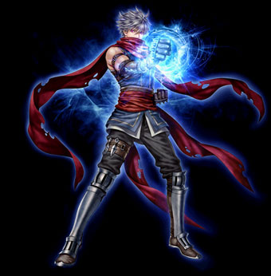

| ダイヤモンドアームズ |
|  |
| ダブルハンズ |
|
<情報>
<持続時間>
- 左手スキル使用時にダメージ量5％増加バフ適用(最大5回)
- 右手スキル使用時に致命打確率5％ 増加バフ適用(最大5回)
- バフ持続時間10秒
<説明>
- 左手攻撃時にはダメージ量が増加する。右手攻撃時には致命打確率が増加する。左手、右手バフは全て最大値になるときダブルハンズバフが発動する。 |
<スキルタイプ>
専用パッシブスキル |
<前提スキル>
- なし |
<パワーアップ形態>
- なし |
| 一撃必殺 |
|
<情報>
- スキル難易度 4
- 必要CP 60
- 消費CP [n]
- 右手スキル
<攻撃関連>
- ◆ 物理ダメージ [n]~[n]
- 攻撃速度 基本攻撃速度x[n]％
<説明>
- 敵の急所を攻撃し、一定の確率で敵の体力を現在の1/3に減らす決定打を与える。麻痺している敵を攻撃すると必ず致命打が発動する。ダブルハンズバフ発動時は致命打攻撃ダメージが3連打になる。直後、左足スキルのレベルがしばらく上昇。 |
<スキルタイプ>
専用強化スキル |
<前提スキル>
- 急所攻撃 Lv50 |
<パワーアップ形態>
- 威力, 攻撃速度, 命中率, 致命打確率, 決定打確率 |
| スキルLv |
1（+0） |
1（+1） |
1（+2） |
1（+3） |
1（+4） |
1（+5） |
| 消費CP |
110 |
111.5 |
113 |
114.5 |
116 |
117.5 |
| 物理ダメージ（％） |
205 |
208.5 |
212 |
215.5 |
219 |
222.5 |
| 攻撃速度（％） |
20 |
20.4 |
20.8 |
21.2 |
21.6 |
22 |
| 命中率（％） |
5 |
5.1 |
5.2 |
5.3 |
5.4 |
5.5 |
| 致命打確率（％） |
95 |
96 |
97 |
98 |
99 |
100 |
| 決定打確率（％） [Max50] |
50 |
| 左足スキルLv上昇 |
8 |
8.1 |
8.2 |
8.3 |
8.4 |
8.5 |
| スキルLv上昇持続時間（秒） |
5 |
| 猛連撃 |
|
<情報>
- スキル難易度 3
- 必要CP 30
- 消費CP [n]
- 獲得CP [n]
- 左手スキル
<攻撃関連>
- ◆ 物理ダメージ [n]~[n]
- 攻撃速度 基本攻撃速度x[n]％
<説明>
- 左手を利用して激しい連打で攻撃。敵が長い時間麻痺し、連続攻撃が可能。直後、右手、下蹴り種類スキルのレベルがしばらく上昇。 |
<スキルタイプ>
強化スキル |
<前提スキル>
- 連打 Lv50 |
<パワーアップ形態>
- 威力, 攻撃速度, 命中率 |
| スキルLv |
1（+0） |
1（+1） |
1（+2） |
1（+3） |
1（+4） |
1（+5） |
| 消費CP |
60 |
61 |
62 |
63 |
64 |
65 |
| 獲得CP |
100 |
102 |
104 |
106 |
108 |
110 |
| 物理ダメージ（％） |
120 |
122 |
124 |
126 |
128 |
130 |
| 攻撃速度（％） |
45 |
45.6 |
46.2 |
46.8 |
47.4 |
48 |
| 命中率（％） |
10 |
10.2 |
10.4 |
10.6 |
10.8 |
11 |
| 麻痺確率（％） |
55 |
| 麻痺時間（秒） |
3 |
| 右手/下蹴りスキルLv上昇 |
7 |
7.1 |
7.2 |
7.3 |
7.4 |
7.5 |
| スキルLv上昇持続時間（秒） |
5 |
| 破貫顎 |
|
<情報>
- スキル難易度 3
- 必要CP 30
- 消費CP [n]
- 獲得CP [n]
- 右手スキル
<攻撃関連>
- ◆ 物理ダメージ [n]~[n]
- 攻撃速度 基本攻撃速度
<説明>
- 右腕の肘で敵の顎を攻撃し、クリティカルヒットボーナスが発生する。また致命打攻撃時に敵の攻撃力を減少させる。直後、左手、右足スキルのレベルと致命打確率がしばらく上昇。 |
<スキルタイプ>
強化スキル |
<前提スキル>
- 貫顎 Lv50 |
<パワーアップ形態>
- 威力, 致命打確率 |
| スキルLv |
1（+0） |
1（+1） |
1（+2） |
1（+3） |
1（+4） |
1（+5） |
| 消費CP |
35 |
35.5 |
36 |
36.5 |
37 |
37.5 |
| 獲得CP |
50 |
51 |
52 |
53 |
54 |
55 |
| 物理ダメージ（％） |
195 |
198.5 |
202 |
205.5 |
209 |
212.5 |
| 致命打確率（％） |
75 |
76 |
77 |
78 |
79 |
80 |
| 攻撃力低下（％） |
10 |
| 持続時間（秒） |
10 |
| 左手/右足スキルLv上昇 |
7 |
7.1 |
7.2 |
7.3 |
7.4 |
7.5 |
| スキルLv上昇持続時間（秒） |
5 |